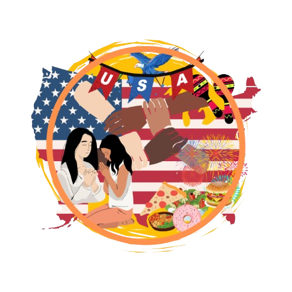
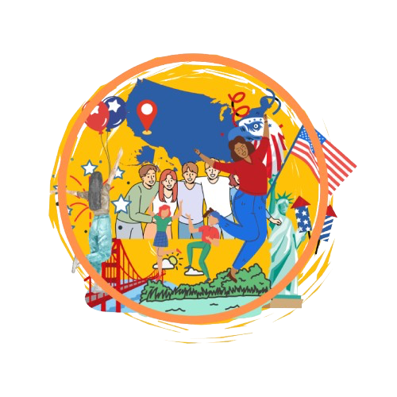

สังคมและวัฒนธรรมของสหรัฐอเมริกา
ประเทศอเมริกานั้นมีประชากรประมาณ 345 ล้านคนและชาวอเมริกันมีต้นกำเนิดจากที่อื่นๆทั่วโลก คนเหล่านี้ถือว่าอเมริกาคือบ้านของตนตามเมืองต่างๆ ในอเมริกาจะมีกลุ่มผู้อพยพและละแวกที่อยู่อาศัยของเชื้อชาติต่างๆมากมายคนเหล่านี้มีวิถีชีวิตและประเพณีตามแบบสังคมเดิมของตน
และแม้ว่าพวกเขาอาจจะยังคงมีวิถีชีวิตตามเชื้อชาติเดิมอยู่ในครอบครัว แต่เกือบทุกคนก็หล่อหลอมเข้าสู่กระแสหลักของอเมริกัน ผู้ที่อาศัยอยู่ในแต่ละส่วนของอเมริกาอาจจะมีทัศนคติและค่านิยมแตกต่างกันไป
โดยคนกลุ่มต่างๆที่ยังคงรักษาขนบธรรมเนียมเดิมของตนไว้และเกาะกลุ่มอยู่ด้วยกันก็มีให้เห็นอยู่ทั่วไป อาทิเช่น China Town และที่ Little Italy ชาวอเมริกันเป็นคนที่ไวต่อการเรียนรู้และเปิดรับประสบการณ์ใหม่ๆ
เต็มใจที่จะค้นคว้าเกี่ยวกับสิ่งที่ไม่ใคร่รู้จักจึงต้องใช้ความอิสระและการมองสิ่งต่างๆในแง่ดีซึ่งเป็นลักษณะเฉพาะอย่างหนึ่งของคนอเมริกันส่วนหนึ่งที่มีมาตั้งแต่เริ่มก่อตั้งประเทศ
จากการที่มีพื้นที่อาณาบริเวณที่กว้างใหญ่ จึงทำให้มีขนบธรรมเนียมประเพณีและวัฒนธรรมที่ต่างกันไปตามภูมิภาค รวมถึงความแตกต่างด้านการใช้ภาษาอังกฤษ ซึ่งภาษาพูดสำเนียงแบบท้องถิ่นก็ยังมีอิทธิพลอยู่ค่อนข้างมากตลอดจนทัศนคติและความคิดเห็น
นอกจากนี้ คนอเมริกันรุ่นใหม่จะมีความสนใจเรื่องรอบข้างมากกว่าแค่การเรียน การศึกษาหรือการทำงาน โดยเฉพาะอย่างยิ่งกับวัยรุ่น ซึ่งจะมีความสนใจในการร่วมกิจกรรมต่างๆมากมาย เล่นกีฬาทุกรูปแบบ พร้อมกับมีส่วนร่วมในองค์กรต่างๆสำหรับเยาวชน
ยิ่งไปกว่านั้นกลุ่มวันรุ่นมักจะมีงานนอกเวลาทำกันเป็นส่วนใหญ่ เพื่อหารายได้มาทำกิจกรรมต่างๆที่ตนเองต้องการ

ขั้นตอนการปรับตัวทางวัฒนธรรม
แม้ว่าแต่ละคนจะมีวิธีการแสดงออกที่แตกต่างกันออกไปในการปรับตัวให้เข้ากับวัฒนธรรมใหม่ๆ แต่โดยทั่วไปการปรับตัวทางวัฒนธรรมที่นักศึกษา ที่ต้องไปใช้ชีวิตในต่างประเทศมี 3 ระยะ ดังนี้
1. ระยะแรกนักศึกษาอาจจะมีประสบการณ์ที่รู้สึกตื่นเต้น สนุก และมีความสุข นักศึกษาจะนึกอยู่เสมอๆ ว่านักศึกษากำลังอยู่ในต่างประเทศ ในวัฒนธรรมใหม่ๆ และอยู่ห่างจากบ้านมาหลายพันไมล์ มีความอิสระ อยากรู้อยากเห็น หรืออยากท่องเที่ยวเพื่อให้มีความรู้สึกถึงการได้มาผจญภัย
2. ในระยะต่อมานั้น นักศึกษาจะเริ่มปรับตัวเข้ากับกิจกรรมในชีวิตประจำวันของคนที่อยู่รอบๆ ข้าง ความรู้สึกผจญภัยนั้นจะค่อยๆ จางลงไป นักศึกษาอาจจะพบภายหลังว่าชีวิตใหม่ในสหรัฐอเมริกาของนักศึกษา จริงๆ แล้วค่อนข้างจะธรรมดาและอาจน่าเบื่ออยู่บ้างซึ่งก็เหมือนกับตอนอยู่มี่บ้านตัวเอง
ระหว่างนี้นักศึกษาอาจจะเริ่มคิดถึงเพื่อนและบ้านเกิด เริ่มคิดถึงความสะดวกสบาย และหวังอยากจะให้สิ่งต่างๆ ในสหรัฐอเมริกามีความเหมือนกับประเทศไทยมากขึ้น เริ่มเห็นจุดบกพร่องของสังคมรอบข้าง ระหว่างช่วงเวลานี้นักศึกษาอาจจะรู้สึกว่าการดำเนินกิจกรรมในชีวิตประจำวัน
พร้อมทั้งรักษาทัศนคติเชิงบวกเอาไว้เป็นเรื่องค่อนข้างยาก และนักศึกษาอาจจะรู้สึกโน้มเอียงว่าอยากจะปลีกตัวจากคนรอบๆ ตัว หรือแม้แต่ทำตัวเป็นปฏิปักษ์กับคนอื่นๆ แม้แต่สิ่งที่ธรรมดาที่สุดก็อาจจะดูเหมือนกับยากเย็น ณ จุดนี้ แต่คนส่วนใหญ่จะผ่านช่วงของความรู้สึกเช่นนี้ได้ในเวลาไม่นาน
อยากให้นักศึกษาระลึกไว้ว่า นักศึกษาก็เป็นเหมือนคนอื่นๆ ที่จะต้องผ่านช่วงเวลาเช่นนี้ และทุกคนก็ผ่านมันไปได้ด้วยดี ที่สำคัญการผ่านขั้นตอนนี้ จะทำให้นักศึกษารู้สึกดีขึ้นและความรู้สึกถึงความสำเร็จเมื่อสิ้นสุดโครงการ
3. ขั้นตอนระยะที่สองจะเปิดทางให้ระยะที่สามก้าวเข้ามาในเวลาไม่นาน นั่นคือการปรับตัวให้เข้ากับวัฒนธรรมอเมริกันอย่างแท้จริง เมื่อนักศึกษาเริ่มคุ้นเคยกับค่านิยมและบุคลิกลักษณะของผู้คนในสหรัฐอเมริกามากขึ้น ชีวิตในแต่ละวันก็จะง่ายขึ้นนักศึกษาจะพบว่าการทำตัวให้กลมกลืนกับวัฒนธรรมอเมริกัน
เป็นเรื่องง่ายขึ้นและโดยนักศึกษาจะเริ่มมีประสบการณ์กับวัฒนธรรมในวิถีทางที่นักศึกษาจะไม่มีวันได้พบเห็นถ้าหากนักศึกษาเป็นเพียงนักท่องเที่ยวซึ่งใช้เวลาอยู่ในสหรัฐอเมริกาเพียงสองสามสัปดาห์
